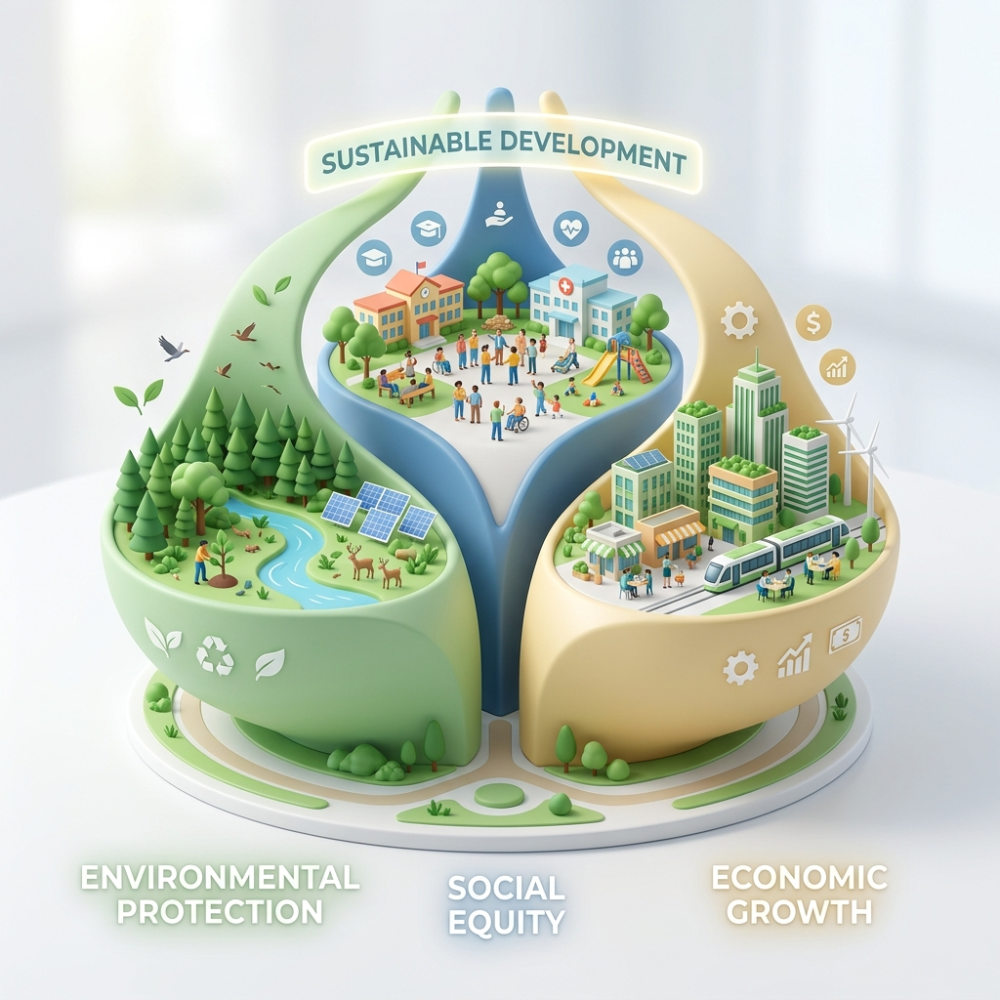
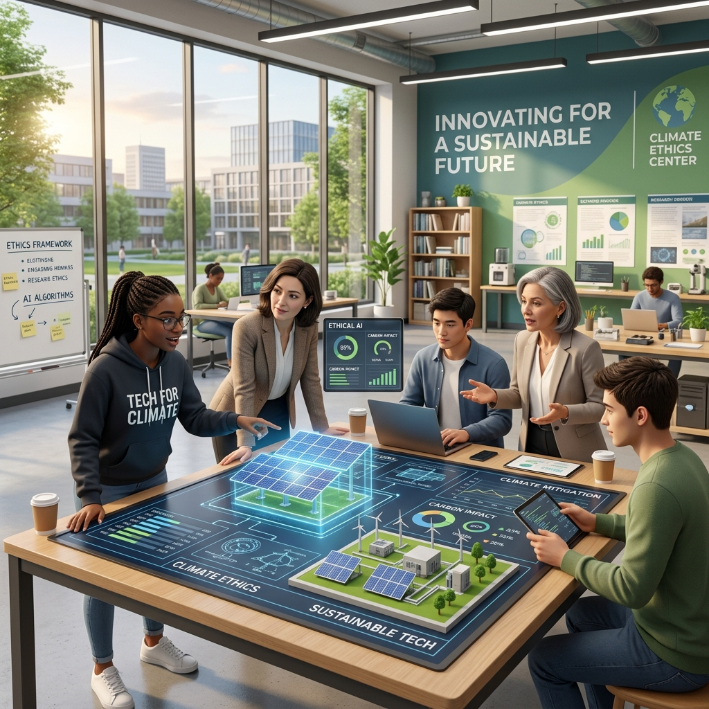

Hacia una Educación Universitaria Transversal frente a la Crisis Climática
El concepto de Desarrollo Sustentable fue formalizado internacionalmente en 1987 a través del histórico Informe Brundtland (titulado originalmente Nuestro Futuro Común). Este documento lo definió como "el desarrollo que satisface las necesidades del presente sin comprometer la capacidad de las futuras generaciones para satisfacer sus propias necesidades".
Hoy, frente a una crisis climática sin precedentes caracterizada por el calentamiento global, la pérdida de biodiversidad y el agotamiento de recursos naturales, esta definición ha evolucionado de ser una recomendación preventiva a convertirse en un imperativo de supervivencia global. La sustentabilidad ya no es un concepto periférico, sino el eje central sobre el cual deben orbitar todas las políticas públicas y las estrategias de desarrollo humano.

El Desarrollo Sustentable se concibe no como un objetivo estático, sino como un proceso de optimización continua que exige un equilibrio armónico entre tres pilares fundamentales. La interdependencia de estos elementos dicta que el progreso en una dimensión no puede sostenerse si se logra a expensas del detrimento de las otras.
Busca generar riqueza y eficiencia productiva, pero redefiniendo el "crecimiento". Impulsa la transición hacia una economía circular que minimice el desperdicio, valore el capital natural y asegure la viabilidad financiera a largo plazo sin agotar los recursos base.
Garantiza la equidad, la erradicación de la pobreza, el acceso a la educación y la salud, y la cohesión comunitaria. Un sistema sustentable debe ser intrínsecamente justo, promoviendo la participación ciudadana y el respeto a los derechos humanos y la diversidad cultural.
Se enfoca en la conservación y protección de los ecosistemas. Requiere el uso racional de los recursos renovables, la drástica reducción de la huella de carbono, la protección de la biodiversidad y la mitigación de la contaminación del aire, agua y suelo.
Para materializar el desarrollo sustentable, es absolutamente crítico que las instituciones de educación superior integren esta disciplina de manera transversal en todos sus programas académicos. La sustentabilidad no debe estar confinada a las facultades de ecología, sino que debe permear la ingeniería, la economía, el derecho y las humanidades.

Esta integración sistémica en las universidades cumple tres objetivos formativos indispensables: